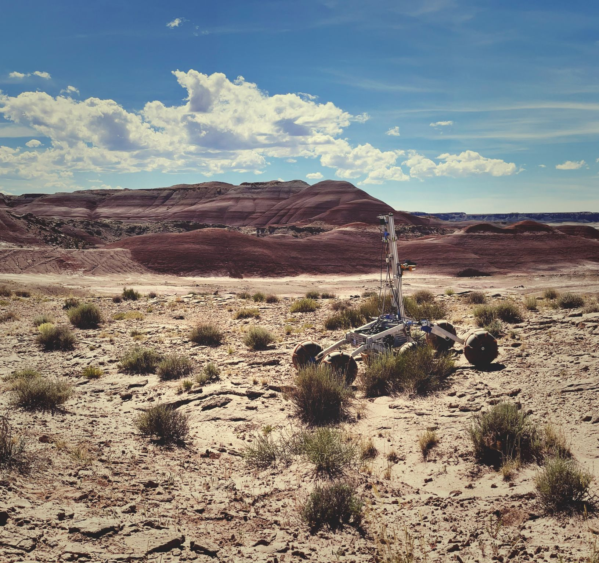
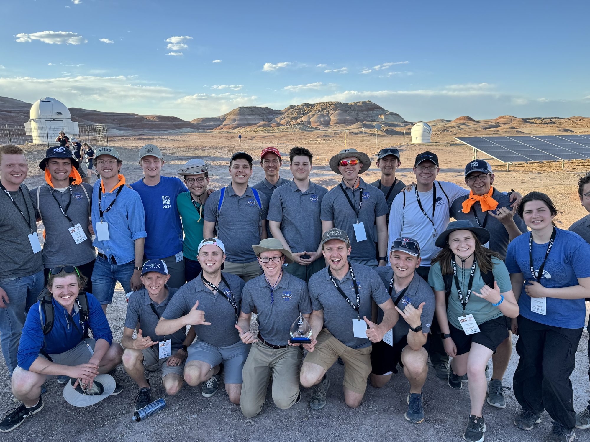
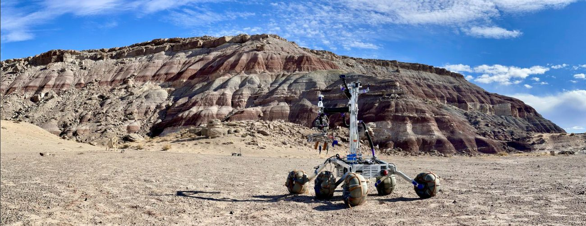

Extracurricular / Team lead 2023–24
BYU
Mars Rover
Leading a 24-person multidisciplinary student team to third place at the 2024 University Rover Challenge.
- Technical team leadership
- Systems integration across disciplines
- Communication-link testing
- ROS 1 & embedded control
- Technical presentation & design review
Role
Competition team lead, 2023–24; electrical sub-team, 2023
Team
24 members across mechanical, electrical, and software
Outcome
3rd place / University Rover Challenge 2024



My role
Systems, people, and reliability.
The University Rover Challenge asks student teams to build Mars-rover prototypes for field tasks such as equipment servicing. I joined the electrical sub-team in 2023 and led the full competition team the following year.
- Team leadership. Coordinated 24 members across electrical, mechanical, and software work, leading to third place at URC 2024.
- Communication reliability. Designed and ran tests that quantified the reliability of different antenna communication frequencies.
- Technical reviews. Presented team progress, design decisions, and open challenges in formal technical reviews.
- Embedded wheel control (2023). Built wheel control through the ROS 1 rosserial interface on an Arduino Mega, improving communication reliability and simplifying the code. Added publisher/subscriber support for sensor input and linear-actuator control.
Related record
Presented at Space Grant.
The team’s work was also presented as a poster at the 2024 Utah NASA Space Grant Consortium. View the poster ↗